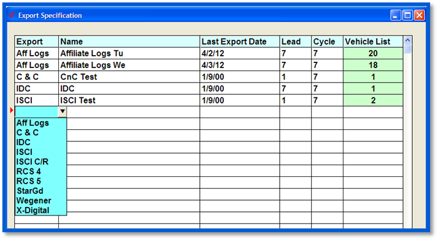

Defining and Editing an Export
Some users will be given the rights to define or edit an export. Those users may click on the “Specifications” button at the bottom of the Export Center screen, and the Export Specification screen will display.

- Select the type of Export you are defining from the Export dropdown
- Enter a descriptive name (up to 50 characters) in the Name column
- In the Last Export Date column, enter the end date of the last successful export of this type, or, if this export has never before been generated, enter the day before the first date it will be run
- Enter the number of days in advance of the log date to generate the export in the Lead column
- Enter the number of days to export (typically 1 or 7) in the Cycle column
- The Vehicle List column will tally the number of vehicles in the export (once determined) and display that number
- To add a vehicle(s) to an Export:
- Click Specifications
- Locate the export whose vehicle list you wish to edit
- Under the Vehicle List column, click in the green number field
- Move the vehicles from the left “Vehicles not to be exported” box to the right “Vehicles to be exported” box
- Click Done
Click in the Vehicle List Column to define or edit the Export’s Parameters.
Each export has unique questions to be answered in the Specification parameters screen, which are detailed in the Affiliate Export Center Custom and Specification Screens.
Defining an Export’s Vehicle List
The bottom portion of the screen is where you select which vehicles will be included in the export. All of the vehicles on the left side of the screen will not be exported; all vehicles on the right side will be included in the export. Any vehicle(s) whose export parameters are set up in the Traffic system will automatically appear in the Vehicles to be exported box.
To include a vehicle in the export, simply click on the vehicle from the side box and it will move to the right side. If you make a mistake, click on the vehicle in the right side and it will return to the left side. When all vehicles are selected, click the Done button.
The newly defined export will now appear on the Main Export Center screen.
Revising Exports
Should you need to revise an export, click on the Vehicle List column to access the Specifications Parameters screen. From here, you can make any necessary changes.
If you accidentally add or delete the wrong vehicles to the export, you can click the Restore button to restore your list to its original vehicles.
If your entire list of vehicles is incorrect, or the majority is incorrect, you can click on the Clear button, and all of your export’s vehicle list will return to the left side of the screen, allowing you to correctly rebuild the list.